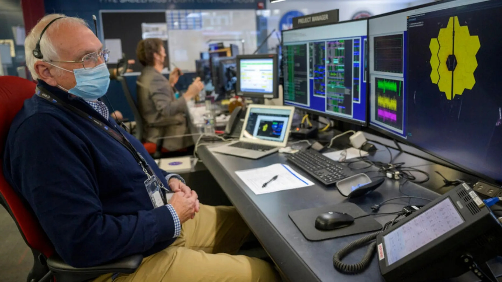

NASA’s new space telescope has gazed into the distant universe and shown perfect vision: a spiky image of a faraway star photobombed by thousands of ancient galaxies....
The image released Wednesday from the James Webb Space Telescope is a test shot — not an official science observation — to see how its 18 hexagonal mirrors worked together for a single coordinated image taken 1 million miles (1.6 million kilometers) away from Earth. Officials said it worked better than expected.
Last month, NASA looked at a much closer star with 18 separate images from its mirror segments.
Scientists said they were giddy as they watched the latest test photos arrive. NASA’s test image was aimed at a star 100 times fainter than the human eye can see — 2,000 light-years away. A light-year is nearly 6 trillion miles (9.7 trillion kilometers).
The shape of Webb’s mirrors and its filters made the shimmering star look more red and spiky but the background really stole the show.
"You can’t help but see those thousands of galaxies behind it, really gorgeous," said Jane Rigby, Webb operations project scientist.
Those galaxies are several billions of years old. Eventually, scientists hope Webb will see so faraway and back in time that it will only be "a couple hundred million years after the Big Bang," she said. The $10 billion Webb — successor to the nearly 32-year-old Hubble Space Telescope — blasted off from South America in December and reached its designated perch in January.
The first science images won’t come until late June or early July.